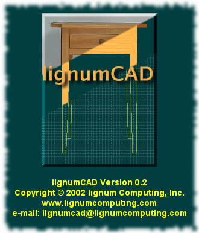
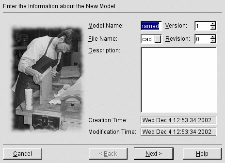
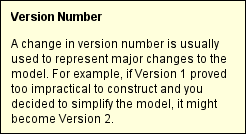
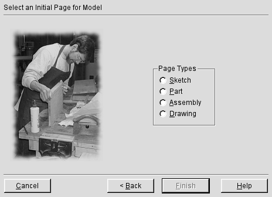
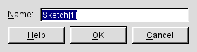
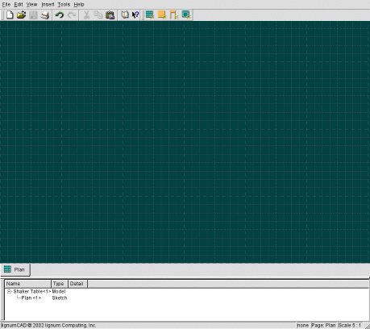

This section of the manual discusses a typical use of lignumCAD. In it, we'll design a very simple, Shaker-style table. In the terminology of lignumCAD, a design is called a model.
Start lignumCAD using the method appropriate to your operating system. You should see a brief splash screen showing copyright and contact information for lignum Computing, Inc.

Within a second or two, the New Model Wizard will appear.

When the New Model Wizard opens, all of the required fields are already filled in. However, unnamed is probably not the best name for our model. Type a new name into the Model Name field, e.g. Shaker Table. Notice that the filename field also updates as you enter the model name. This is not a required relationship in lignumCAD, it is purely for convenience. You should also enter a description: try pressing Alt+D to move the focus to the Description field and then enter the text: "Design of a pine, Shaker-style table.".
Since this is the first version of our table, it is not necessary to modify the version and revision fields, but for the sake of exercise, try pressing Alt+V and using the up-and down-arrow keys to change the version number of the model. Note that you cannot enter a version number smaller than one (if you look closely, the down button will be disabled when the version is '1'). You can also type in a value for the version. Note, however, that a typed-in value is not validated until the keyboard focus leaves widget. If you were to enter a value of 1001 and then exit this page of the wizard, you would not see the value silently changed to 1000, which is the largest allowed version number.
Finally, test out the What's This? help. With the keyboard focus in the Version widget, press Shift+F1. You should see a message along the lines of:

This message will remain on the screen until you click a mouse button or type a key. Similarly, if you click on the Help button, or press Alt+H, you get a lengthier explanation of the dialog. This help message will also remain on the screen until you click a mouse button or type a key.
Go to the next page of the New Model Wizard by either: clicking the Next button, pressing Alt+N or pressing Enter. Note that if the keyboard focus happens to be in the Description widget, Enter will actually just enter a new line in the description. So, either use Alt+N, or use Shift+Tab to move the keyboard focus to a different widget and then press Enter.

As mentioned in the introduction, lignumCAD is laid out like a notebook. The metaphor is that you are creating a book with a number of pages which represent various aspects of the model. To get started, then, you need to pick an initial type of page for the model. The choice of initial page is arbitrary; lignumCAD will let you start anywhere in your design. However, when starting from scratch, the best place to start is with some general sketches of the overall size and shape of the piece of furniture. So, pick Sketch and press Enter (or click Finish or press Alt+F). Note that Finish is not available until you have picked an initial page.
The next dialog which appears prompts for a name for the initial page.

We're going to start with a top view of our table; such a view is usually called a plan view. The keyboard focus should already be in the Name widget, so type Plan into the input field and press Enter. lignumCAD will create the new page and present the full user interface. A somewhat reduced image of the full user interface is shown below.

The lignumCAD main window contains the usual user interface elements. Briefly, at the top is a menu bar. Below the menu bar is a dockable tool bar. The tool bar can be part of the application window, or you can grab the handle and drag it outside the main window to have a separate window. Below the (initial) tool bar area is the main graphics display window. For a Sketch, the window shows a grid, similar to graph paper. Below the graphics display window is the page tab bar. Each page will have a tab in the page tab bar. Clicking the tab will cause the graphics display window to show that page. Below the page tab bar is the model hierarchy window. Each page and its contents are summarized in this window. Below the model hierarchy window is the status window. The components of the status window are (from left to right): the general message area, the current action area, the current page name, and the page's scale.
Rather than explain the whole user interface, we'll try to introduce the features are they become relevant to this tutorial. You can always check out the details in the reference section of this manual.